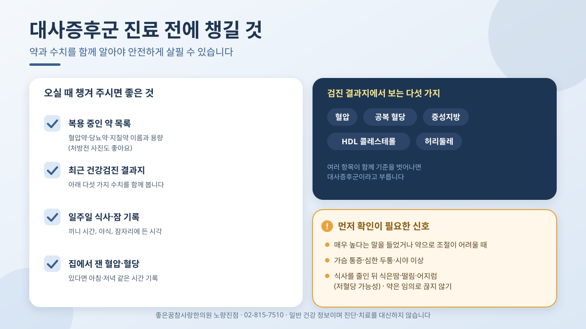

이종호 한의사 감수좋은꿈참사랑한의원 대표원장 (한의사 면허번호 19769)발행 2026-11-22 · 수정 2026-11-26
이 글의 차례
내과 진료실을 나와 약국으로 걸어가는 길입니다. "체중을 조금 줄여 보시죠." 방금 들은 말이 귓가에 남습니다. 혈압약을 먹은 지 몇 년, 작년부터는 당뇨약도 하나 늘었습니다.
이번에는 정말 마음먹고 해 보자 싶은데 걱정이 줄줄이 따라옵니다. 이 약을 먹으면서 다이어트 한약을 같이 먹어도 될까. 살이 빠지면 약은 줄여도 되는 걸까. 굶다가 어지러워 쓰러지기라도 하면 어쩌나.
진료실에서 이런 질문을 자주 받습니다. 약을 먹고 있다는 사실이 다이어트 앞에서 괜히 걸림돌처럼 느껴진다고들 하십니다. 몸을 챙기려는 마음인데 어디서부터 손대야 할지 몰라 망설여지는 그 마음, 충분히 이해합니다.
다이어트가 필요하다는 걸 몰라서 못 하는 분은 사실 거의 안 계십니다. 그래서 저는 "그게 되는 거였으면 여기까지 왔겠어요?" 하고 그동안의 마음고생부터 알아 드립니다. 그러고 나서 지금 해낼 수 있는 크기로 할 일을 잘게 나눠 봅니다.
먼저 답부터 드리겠습니다. 다이어트 상담 전에는 지금 드시는 약의 이름과 용량, 진단받은 병과 다니는 병원, 최근 건강검진 결과를 먼저 알려 주세요. 혈압약과 당뇨약은 다이어트를 시작해도 처방한 의사와 상의 없이 줄이거나 끊지 않습니다.
한의원 진료는 이 약들을 대신하지 않습니다. 드시는 약을 모두 알아야 한약이 필요한지, 어떤 약재를 피해야 하는지, 식사를 어디까지 조절해도 안전한지를 가늠할 수 있습니다.
왜 약과 지병부터 확인할까요
다이어트를 시작하면 몸에서 여러 숫자가 한꺼번에 움직입니다. 먹는 양이 줄고 움직임이 늘어 체중이 내려가면 혈당과 혈압도 따라 달라질 수 있습니다. 같은 약을 같은 양으로 드시는데 몸의 사정이 바뀌는 셈입니다.
- 당뇨약을 드시는 분이 갑자기 식사량을 줄이면, 같은 약에도 혈당이 지나치게 떨어지는 저혈당이 올 수 있습니다.
- 일부 약재는 가슴 두근거림이나 불면 같은 반응이 있을 수 있어, 혈압이 높거나 심장·갑상선 질환이 있는 분은 더 신중하게 봐야 합니다.
- 다이어트 보조제나 건강기능식품 가운데에는 카페인처럼 잠과 맥박에 영향을 주는 성분이 든 것도 있습니다.
- 갑상선 약이나 콜레스테롤 약처럼 함께 드시는 약에 따라 살필 점과 복용 시간이 달라집니다.
약과 지병을 모른 채 계획을 세우면, 몸을 돌보려던 다이어트가 오히려 몸에 부담이 될 수 있습니다. 그래서 저는 순서를 바꾸지 않습니다. 약을 먼저 보고, 그다음에 식사와 한약을 이야기합니다.
검진 결과지에서 먼저 볼 다섯 칸
건강검진 결과지를 가져오시면 허리둘레, 혈압, 공복혈당, 중성지방, HDL 콜레스테롤 칸부터 봅니다. 이 가운데 여러 항목이 동시에 기준을 벗어난 상태를 대사증후군이라고 부릅니다.
하나하나는 경계선이어도 여럿이 모이면 생활 리듬을 점검해 볼 신호가 됩니다. 정상과 주의를 가르는 숫자는 결과지에 표시돼 있으니 그 표시를 따라 읽으시면 됩니다. 지난해 결과지가 있다면 나란히 놓아 보세요.
저는 다친 적 없이 생긴 허리 통증을 몸이 켜 주는 경고등에 빗대어 말씀드리곤 합니다. 불만 지우고 지나가면 같은 불이 다시 들어오기 쉽다는 뜻입니다. 결과지의 '주의' 표시도 숫자만 보고 접어 두기보다, 왜 그 불이 들어왔는지 함께 읽어 보셨으면 합니다.
결과지에 재검사나 추가 검사를 받으라는 안내가 있다면 그 안내부터 따르세요. 약은 처방받은 대로 드시면서, 그 불을 켠 생활을 같이 살펴보자는 것이 제 생각입니다.
숫자 뒤에 있는 생활
체중을 움직이는 것은 먹는 양과 움직이는 양만이 아닙니다. 잠, 스트레스, 식욕의 리듬, 복용 중인 약, 건강 상태가 함께 작용합니다. 그래서 무엇을 얼마나 드시는지와 함께, 언제 어떤 기분일 때 손이 가는지를 여쭙습니다.
속상한 일을 이런저런 방법으로 풀던 분이 어느 때부터인가 먹는 것 하나로만 푸시게 되는 시기가 있습니다. 체하기라도 하면 덜 드실 텐데, 속은 멀쩡하니 자꾸만 손이 갑니다. 저는 그 마음을 나무라기보다 다른 풀 곳을 같이 찾아보고 싶습니다.
잠도 빼놓을 수 없습니다. 잠이 부족하면 식욕 조절이 흔들릴 수 있어서 다이어트 상담에서도 잠을 꼭 여쭙니다. 한의학에서는 식욕과 체중을 소화의 힘, 몸의 온기, 마음의 긴장과 이어서 보기에 식후 졸림, 붓기, 손발 냉기, 대변 상태도 같이 살핍니다.
다이어트 한약을 생각하신다면
다이어트 한약을 식욕 억제제로만 생각하시는 분이 많습니다. 처방 구성은 사람마다 다르고, 저는 잠과 식욕, 소화, 혈압, 드시는 약을 함께 보고 정합니다. 한약이 맞지 않는 분도 있어서, 진맥과 상담 없이 약부터 정하지는 않습니다.
처방 전에는 평소 혈압과 맥박, 잠을 여쭙고, 드시는 동안에도 두근거림이나 잠 설침이 없는지 계속 확인합니다. 이런 반응이나 어지럼이 생기면 다음 진료를 기다리지 말고 바로 연락해 주세요.
당뇨약을 드시는 분은 한 가지를 더 챙겨야 합니다. 한약을 드시는 동안 식사량이 줄면 당뇨약과 겹쳐 혈당이 떨어질 수 있습니다. 그래서 끼니를 거르지 않는 식사 간격과 저혈당 신호를 따로 말씀드립니다.
제가 늘 드리는 말씀이 있습니다. "맥을 읽어 드리고, 약을 드신 뒤 반응을 보고, 다시 맥을 짚습니다. 그렇게 함께 걸어가는 치료입니다." 약재는 원내에서 달이고, 대표원장인 제가 직접 살핍니다.
몇 킬로를 언제까지 빼 드리겠다는 약속은 드리지 않습니다. 체중이 변하는 정도와 속도는 사람마다 다르기 때문입니다. 대신 지킬 수 있는 생활 목표를 함께 정하고, 다음에 오시면 그 목표가 어땠는지부터 여쭙습니다.
살이 빠지면 약은 줄여도 될까요
다이어트 이야기를 나누다 보면 이 질문이 꼭 나옵니다. 생활이 바뀌면 혈압과 혈당 숫자가 달라질 수 있는 것은 맞습니다. 하지만 약을 줄일지 그대로 둘지는 처방한 의사가 숫자와 몸 상태를 보고 정할 일입니다.
혈압약과 당뇨약은 마음대로 끊었을 때 위험해질 수 있는 약입니다. 집에서 잰 혈압과 혈당 기록을 들고 처방한 의사를 찾아가 보세요. 그 기록이 약을 어떻게 할지 판단하는 데 도움이 됩니다.
다이어트 중에 일어설 때 어지럼이 잦아지거나 집에서 잰 혈압이 평소보다 많이 낮게 나온다면, 그것도 처방한 의사에게 바로 알리셔야 합니다. 콜레스테롤 약을 드시면서 걷기를 늘렸는데 근육이 유난히 아프다면, 약과 관련이 있을 수 있으니 참고 넘기지 마시고 처방한 의사와 상의하세요.
자주 하는 오해, 조금 풀어 드릴게요
"한약은 자연에서 온 거니까 약이랑 같이 먹어도 괜찮겠죠?" 복용 중인 약에 따라 피해야 할 약재가 있습니다. 자연에서 왔다는 것과 내 몸에 맞는다는 것은 다른 이야기라, 드시는 약은 빠짐없이 알려 주셔야 합니다.
"굶는 게 제일 빠르지 않나요?" 무리하게 굶으면 오래 이어 가기 어렵고, 근육이 적은 분은 근육이 함께 빠질 수 있어 저는 말리는 편입니다. 당뇨약을 드신다면 저혈당 걱정까지 더해집니다. 급하게 줄인 식사량은 다시 늘기도 쉽습니다.
"남들이 좋다는 식단을 그대로 따라 하면 되겠죠?" 누구에게나 좋다는 방법이 어떤 분에게는 맞지 않을 때가 있습니다. 잡곡밥이 좋다기에 바꿨다가 속이 더부룩해졌다는 분도 계십니다. 당뇨처럼 식사 관리가 필요한 병이 있다면 치료받는 병원의 지침을 함께 지켜 주세요.
이런 경우가 많습니다
예를 들어 혈압약을 드시며 체중을 줄이고 싶은 분이라면, 약 이름과 용량, 집에서 잰 혈압 기록을 먼저 보고 두근거림이나 잠 문제가 있는지 확인합니다.
예를 들어 당뇨약을 드시는데 끼니를 거르며 다이어트를 하던 분이라면, 그 방식이 맞지 않을 수 있어 식사 간격부터 다시 정하고 내과와 상의하시도록 안내합니다.
예를 들어 갑상선 약을 드시는 분이라면, 최근 검사 결과와 복용 시간을 먼저 여쭙고 한약이 필요한지를 더 신중하게 정합니다.
먼저 이렇게 여쭙니다
- 복용 중인 혈압약, 당뇨약, 콜레스테롤 약, 갑상선 약의 이름과 용량은 무엇인가요?
- 진단받은 병과 다니는 병원, 최근에 바뀐 약이 있나요?
- 영양제, 다이어트 보조제, 비만 치료 주사나 다른 한약을 쓰고 계신가요?
- 최근 건강검진에서 혈압, 공복혈당, 중성지방, HDL 콜레스테롤, 허리둘레는 어땠나요?
- 몇 시에 자고 자주 깨는지, 끼니 시간과 야식은 어떤지 알려 주세요.
이렇게 여쭙는 까닭은 단순합니다. 저는 치료를 세게 하기 전에 먼저 물어야 한다고 생각합니다. 전에 어지러웠던 적이 있는지, 드시는 약은 무엇인지, 오늘 기운은 어떤지를요. 다이어트도 다르지 않습니다.
스스로 점검해 보세요
- 혈압약, 당뇨약, 갑상선 약, 콜레스테롤 약 가운데 드시는 것이 있다
- 약 이름과 용량을 정확히 모른다
- 다이어트 보조제나 건강식품을 따로 드신다
- 예전에 다이어트 약을 먹고 두근거리거나 잠이 안 온 적이 있다
- 최근 1년 안에 건강검진을 받지 않았다
- 끼니를 거르며 체중을 줄이려 한 적이 있다
해당하는 것이 있다면 약 봉투나 처방전, 검진 결과지를 챙겨 오세요. 상담이 훨씬 정확해집니다.

일상에서 먼저 해 볼 수 있는 것
- 집에 혈압계가 있다면 아침과 저녁 같은 시간에 재서 적어 두기
- 식사를 거르기보다 끼니 시간을 일정하게 맞추고, 채소와 단백질을 먼저 먹기
- 식후 10~15분 가볍게 걷기(무릎이 불편하면 평지로)
- 단 음료와 늦은 야식을 우선 줄여 보기
- 체중은 일주일에 한두 번 같은 시간에, 허리둘레는 한 달에 한 번 배꼽 높이에서 재기
- 복용 중인 약은 약 봉투나 처방전 사진으로 한곳에 모아 두기
운동은 거창하지 않아도 됩니다. 동네 한 바퀴를 천천히 도는 것부터 시작해도 충분합니다. 당뇨약을 드신다면 빈속에 오래 걷기보다 식사 뒤에 걸으시는 편이 안전합니다.
체중을 매일 재지 말라는 데에도 까닭이 있습니다. 하루 사이 몸속 물의 양만 달라져도 숫자는 오르내립니다. 그 흔들림에 하루 기분을 맡기기보다, 몇 주에 걸쳐 어느 쪽으로 움직이는지를 보시는 편이 몸에도 마음에도 덜 부담스럽습니다.
한의원에서 함께 살필 수 있는 경우
- 식사 뒤 나른함이 오래 가고 몸이 무거운 경우 식사 간격과 활동량의 균형을 함께 살핍니다.
- 식욕이 들쭉날쭉해 과식과 거르기를 오가는 경우 식사 리듬과 수면 시간을 나란히 놓고 봅니다.
- 붓기가 잦고 손발이 차거나 순환이 더딘 경우 몸의 온기와 움직임을 함께 살핍니다.
처음 오시면 드시는 약과 검진 결과부터 확인하고, 식사 시간과 내용, 잠, 활동량을 여쭙습니다. 그다음 양손의 맥을 짚고, 필요하다고 판단되면 혀와 배도 살핍니다.
필요하다고 판단될 때는 인바디 770으로 체성분을 재고, 당화혈색소 검사기로 최근 2~3개월의 평균적인 혈당 흐름을 봅니다. 원내 혈액 검사기로 확인할 수 있는 항목이 있으면 건강검진 결과와 나란히 놓고 봅니다. 심장 박동기처럼 몸속에 넣은 전자 의료기기가 있거나 임신 중이라면 인바디를 재기 전에 꼭 말씀해 주세요.
이 검사들은 모든 분께 하지 않고, 진단을 대신하지도 않습니다. 결과지는 맥을 짚고 생활 이야기를 들은 뒤에 펼칩니다. 근육이 적게 나온 칸이 있으면 하루 세 끼에 단백질 반찬이 몇 번 오르는지, 하루에 얼마나 오래 앉아 계시는지를 여쭙는 식입니다.
진단과 약 조절이 필요한 부분은 내과에서 받으시도록 안내합니다. 다시 오시면 지난번 정한 끼니 간격과 잠이 지켜졌는지, 지키기 어려웠던 사정은 무엇이었는지부터 이어서 여쭙습니다.
얼마나 지켜보고, 언제 상담하면 좋을까요
생활 계획을 시작했다면 2~4주 동안은 체중보다 끼니 간격과 잠이 지켜졌는지를 먼저 적어 보세요. 한약을 드시는 중 두근거림, 잠 설침, 어지럼이 생기면 다음 진료를 기다리지 말고 바로 연락해 주세요.
집에서 잰 혈압이나 혈당이 평소보다 크게 오르내린다면 약을 처방받은 병원에 먼저 알리셔야 합니다. 약을 어떻게 할지는 그곳에서 정합니다.
이렇게 기록해 오시면 상담이 쉬워집니다
- 복용 중인 약 목록 또는 처방전 사진
- 최근 건강검진 결과지(혈압, 공복혈당, 중성지방, HDL 콜레스테롤, 허리둘레)
- 일주일 동안의 식사 시간과 잠자리에 든 시각
- 집에서 잰 혈압이나 혈당 기록(있다면)
- 예전에 먹었던 다이어트 약이나 보조제와 그때의 반응
이런 증상은 먼저 확인이 필요합니다
- 가슴 통증이나 숨참, 갑자기 한쪽 팔다리 힘이 빠지거나 말이 어눌해지는 경우
- 혈압이 갑자기 아주 높게 나오면서 심한 두통이나 시야 이상이 함께 있는 경우
이런 신호가 있으면 한의원보다 가까운 병원이나 응급실을 먼저 찾으세요.
마치며
약을 드시면서 다이어트를 하는 일은 챙길 것이 많습니다. 그만큼 내 몸을 꼼꼼히 돌보겠다는 결심이기도 합니다. 그 결심을 한 것만으로도 이미 한 걸음을 떼신 셈입니다.
큰 숫자를 목표로 세우면 못 지킨 날마다 마음이 무너지기 쉽습니다. 끼니 시간 하나, 저녁 산책 하나처럼 해낼 수 있는 만큼을 정해 보세요. 어긋난 날이 있으면 그날은 그냥 넘기시고, 다음 날 다시 시작하시면 됩니다.
다음에 진료실에서 뵈면, 저는 지금 드시는 약 봉투와 지난 한 주의 끼니 시간부터 함께 펼쳐 보겠습니다. 그리고 양손의 맥을 짚겠습니다.
함께 읽으면 좋은 글
- 다이어트 상담에서는 무엇을 확인하나요?
- 한약을 먹기 전에 한의원에 꼭 알려야 하는 것은 무엇인가요?
- 가정에서 혈압을 잴 때는 어떻게 하면 정확한가요?

여쭙는 것
- 복용 중인 혈압약, 당뇨약, 콜레스테롤 약, 갑상선 약의 이름과 용량은 무엇인가요?
- 진단받은 병과 다니는 병원, 최근에 바뀐 약이 있나요?
- 영양제, 다이어트 보조제, 비만 치료 주사나 다른 한약을 쓰고 계신가요?
생활에서 해 볼 것
- 집에 혈압계가 있다면 아침과 저녁 같은 시간에 재서 적어 두기
- 식사를 거르기보다 끼니 시간을 일정하게 맞추고, 채소와 단백질을 먼저 먹기
- 식후 10~15분 가볍게 걷기(무릎이 불편하면 평지로)
한의원에서 함께 살필 것
- 식사 뒤 나른함이 오래 가고 몸이 무거운 경우 식사 간격과 활동량의 균형을 함께 살…
- 식욕이 들쭉날쭉해 과식과 거르기를 오가는 경우 식사 리듬과 수면 시간을 나란히 놓고…
- 붓기가 잦고 손발이 차거나 순환이 더딘 경우 몸의 온기와 움직임을 함께 살핍니다.
먼저 확인이 필요한 신호
- 가슴 통증이나 숨참, 갑자기 한쪽 팔다리 힘이 빠지거나 말이 어눌해지는 경우
- 혈압이 갑자기 아주 높게 나오면서 심한 두통이나 시야 이상이 함께 있는 경우
한눈에 보는 표
| 구분 | 핵심 |
|---|---|
| 여쭙는 것 | 복용 중인 혈압약, 당뇨약, 콜레스테롤 약, 갑상선 약의 이름과 용량은 무엇인가요? 진단받은 병과 다니는 병원, 최근에 바뀐 약이 있나요? |
| 생활에서 해 볼 것 | 집에 혈압계가 있다면 아침과 저녁 같은 시간에 재서 적어 두기 식사를 거르기보다 끼니 시간을 일정하게 맞추고, 채소와 단백질을 먼저 먹기 |
| 한의원에서 함께 살필 것 | 식사 뒤 나른함이 오래 가고 몸이 무거운 경우 식사 간격과 활동량의 균형을 함께 살핍니다. 식욕이 들쭉날쭉해 과식과 거르기를 오가는 경우 식사 리듬과 수면 시간을 나란히 놓고 봅니다. |
| 먼저 확인이 필요한 신호 | 가슴 통증이나 숨참, 갑자기 한쪽 팔다리 힘이 빠지거나 말이 어눌해지는 경우 혈압이 갑자기 아주 높게 나오면서 심한 두통이나 시야 이상이 함께 있는 경우 |
자주 묻는 질문
혈압약이나 당뇨약을 한의원 진료로 대신할 수 있나요?
아니요. 혈압약과 당뇨약은 한의원 진료로 대신할 수 없습니다. 복용 중인 약은 임의로 줄이거나 끊지 마시고 처방한 의사와 상의하세요.
처음 갈 때 무엇을 가져가야 하나요?
복용 중인 약 목록이나 처방전 사진, 최근 건강검진 결과지, 집에서 잰 혈압·혈당 기록(있다면)을 가져오시면 상담에 도움이 됩니다.
당뇨약을 먹는데 식사량을 줄여도 되나요?
식사량을 갑자기 줄이면 혈당이 지나치게 떨어질 수 있습니다. 처방한 의사와 먼저 상의하시고, 식사 리듬은 진료 때 함께 정합니다.
다이어트 한약은 식욕 억제제인가요?
처방 구성은 사람마다 다릅니다. 일부 약재는 두근거림이나 잠이 안 오는 반응이 있을 수 있어 복용 약과 평소 혈압, 수면 상태를 살피며 신중하게 정합니다.
한약을 먹으면 몇 킬로나 빠지나요?
체중 변화는 사람마다 달라 숫자나 기간을 약속드리지 않습니다. 진찰 뒤 식사·잠·활동의 리듬과 함께 한약이 필요한지 상담합니다.
좋은꿈참사랑한의원은 재진 때 지난번 이야기부터 이어서 여쭙니다. 진료시간과 예약은 오시는 길에서 확인하세요.
어디서 상담받을 수 있나요?
좋은꿈참사랑한의원은 서울 동작구 만양로2길 2 신성빌딩 3층·5층(서울 동작구 상도동, 7호선 상도역 3번 출구 근처)에 있습니다. 한의사 3명(이종호 대표원장, 조영기 수석진료원장, 정원영 진료원장)이 진료합니다. 진료시간은 평일 09:30~20:00(점심 13:00~14:00), 토·일·공휴일 09:30~15:00이며, 방문 전 전화로 확인을 권합니다. 예약은 네이버 예약, 카카오톡 상담, 전화 02-815-7510로 받습니다.
이 글은 일반적인 건강 정보이며 개인의 진단이나 치료를 대신하지 않습니다. 증상이 있거나 복용 중인 약이 있다면 진료를 통해 확인하세요. 치료 효과는 개인마다 다를 수 있습니다.
작성 기준: 일반적으로 알려져 있는 건강 정보를 참고해 정리했습니다(대표원장 감수). 증상 기록은 1~2주 동안 하루 1회, 비슷한 시간에 적어 오시면 지난 상태와 비교하기 쉽습니다.